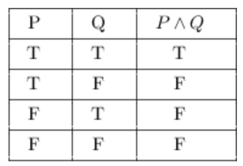
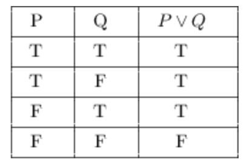

Lecture #10: Data Wrangling
SDS 192: Introduction to Data Science
Jericho Lawson
Statistical & Data Sciences, Smith College
Fall 2025
Slides adopted from Lindsay Poirier
Statistical & Data Sciences, Smith College
Fall 2025
Slides adopted from Lindsay Poirier
Last Time
- More behind R
- Data imports
- Missing data
- Other topics
- Version control
- git/Github
- Workflow
Data wrangling
- A process for transforming a dataset from its original form into a more relevant form.
Source: NAM-IT
Data is messy!
- We are messy
- Data, processes, views, government
- Question: Think of 1-2 actions/situations that can result in issues with our data.
The messiness
- Our focus for today: transformation!
Let’s tidy the data!
- Order them by some metric
- Subset certain variables or observations based on some criteria
- Create columns based on other variables
- Summarize data into meaningful tables
dplyr: the grammar of data manipulation
- Manipulation is good!
- …well, in the context of data wrangling
- dplyr is an R package used for data manipulation
- Common verbs used as function names for actions on data
- To install:
install.packages('dplyr')
The piping operator
%>%or|>- Useful when multiple actions are done on object in succession
Motivating dataset
midwestdata set inggplot2package- 437 midwest counties with 28 variables
- Demographic information of midwest U.S. counties from 2000 U.S. census
Let’s tidy the data! - The six verbs
- Order them by some metric
arrange()
- Subset certain variables or observations based on some criteria
select()for variables,filter()for observations
- Create columns based on other variables
mutate()
- Summarize data into meaningful tables
summarize()andgroup_by()
arrange()
arrange()sorts rows according to values in a column- Sorts in ascending order (numeric) or alphabetically (character).
desc()changes it to descending order- Additional arguments results in subsequent ordering
- Base R analog:
sort()
# A tibble: 6 × 28
PID county state area poptotal popdensity popwhite popblack popamerindian
<int> <chr> <chr> <dbl> <int> <dbl> <int> <int> <int>
1 561 ADAMS IL 0.052 66090 1271. 63917 1702 98
2 663 ADAMS IN 0.021 31095 1481. 30530 36 42
3 2009 ADAMS OH 0.035 25371 725. 25212 47 67
4 2981 ADAMS WI 0.041 15682 382. 15001 375 125
5 1197 ALCONA MI 0.041 10145 247. 10026 27 56
6 562 ALEXAND… IL 0.014 10626 759 7054 3496 19
# ℹ 19 more variables: popasian <int>, popother <int>, percwhite <dbl>,
# percblack <dbl>, percamerindan <dbl>, percasian <dbl>, percother <dbl>,
# popadults <int>, perchsd <dbl>, percollege <dbl>, percprof <dbl>,
# poppovertyknown <int>, percpovertyknown <dbl>, percbelowpoverty <dbl>,
# percchildbelowpovert <dbl>, percadultpoverty <dbl>,
# percelderlypoverty <dbl>, inmetro <int>, category <chr>arrange()
arrange()sorts rows according to values in a column- Sorts in ascending order (numeric) or alphabetically (character).
desc()changes it to descending order- Additional arguments results in subsequent ordering
- Base R analog:
sort()
# A tibble: 6 × 28
PID county state area poptotal popdensity popwhite popblack popamerindian
<int> <chr> <chr> <dbl> <int> <dbl> <int> <int> <int>
1 561 ADAMS IL 0.052 66090 1271. 63917 1702 98
2 562 ALEXAND… IL 0.014 10626 759 7054 3496 19
3 563 BOND IL 0.022 14991 681. 14477 429 35
4 564 BOONE IL 0.017 30806 1812. 29344 127 46
5 565 BROWN IL 0.018 5836 324. 5264 547 14
6 566 BUREAU IL 0.05 35688 714. 35157 50 65
# ℹ 19 more variables: popasian <int>, popother <int>, percwhite <dbl>,
# percblack <dbl>, percamerindan <dbl>, percasian <dbl>, percother <dbl>,
# popadults <int>, perchsd <dbl>, percollege <dbl>, percprof <dbl>,
# poppovertyknown <int>, percpovertyknown <dbl>, percbelowpoverty <dbl>,
# percchildbelowpovert <dbl>, percadultpoverty <dbl>,
# percelderlypoverty <dbl>, inmetro <int>, category <chr>arrange()
arrange()sorts rows according to values in a column- Sorts in ascending order (numeric) or alphabetically (character).
desc()changes it to descending order- Additional arguments results in subsequent ordering
- Base R analog:
sort()
# A tibble: 6 × 28
PID county state area poptotal popdensity popwhite popblack popamerindian
<int> <chr> <chr> <dbl> <int> <dbl> <int> <int> <int>
1 2981 ADAMS WI 0.041 15682 382. 15001 375 125
2 2982 ASHLAND WI 0.054 16307 302. 14749 17 1478
3 2983 BARRON WI 0.053 40750 769. 40346 40 209
4 2984 BAYFIELD WI 0.089 14008 157. 12707 29 1240
5 2985 BROWN WI 0.032 194594 6081. 186621 1012 3869
6 2986 BUFFALO WI 0.04 13584 340. 13521 5 22
# ℹ 19 more variables: popasian <int>, popother <int>, percwhite <dbl>,
# percblack <dbl>, percamerindan <dbl>, percasian <dbl>, percother <dbl>,
# popadults <int>, perchsd <dbl>, percollege <dbl>, percprof <dbl>,
# poppovertyknown <int>, percpovertyknown <dbl>, percbelowpoverty <dbl>,
# percchildbelowpovert <dbl>, percadultpoverty <dbl>,
# percelderlypoverty <dbl>, inmetro <int>, category <chr>Subsetting data: select(), filter()
- Subsetting involves selecting relevant variables and observations for analysis
select()
- Select variables (columns) of interest
- Each argument is a variable to keep
- Base R analog:
data[, c("var1", "var2", ...)]

select()
- Select variables (columns) of interest
- Each argument is a variable to keep
- Base R analog:
data[, c("var1", "var2", ...)]
# A tibble: 6 × 5
county state poptotal percbelowpoverty percollege
<chr> <chr> <int> <dbl> <dbl>
1 ADAMS IL 66090 13.2 19.6
2 ALEXANDER IL 10626 32.2 11.2
3 BOND IL 14991 12.1 17.0
4 BOONE IL 30806 7.21 17.3
5 BROWN IL 5836 13.5 14.5
6 BUREAU IL 35688 10.4 18.9filter()
- Retrieves observations (rows) according to a certain criteria that we provide
- Based on value from another column, range of values from another continuous columns
- Base R analog:
data[condition ,]

filter()
==for matching;>,>=,<,<=for numeric cutoffs&,|for merging statements together- e.g. only want Illinois counties with populations above 10,000
state == "IL" & poptotal > 10000
Aside: truth tables
- Used for showing truth in compounded statements
- Seen in discrete math (and proofwriting)

&)
|)filter()
- Retrieves observations (rows) according to a certain criteria that we provide
- Based on value from another column, range of values from another continuous columns
- e.g. only want Illinois counties with populations above 10,000
# A tibble: 6 × 5
county state poptotal percbelowpoverty percollege
<chr> <chr> <int> <dbl> <dbl>
1 ADAMS IL 66090 13.2 19.6
2 ALEXANDER IL 10626 32.2 11.2
3 BOND IL 14991 12.1 17.0
4 BOONE IL 30806 7.21 17.3
5 BUREAU IL 35688 10.4 18.9
6 CARROLL IL 16805 11.7 16.2mutate()
- Creates a new variable (column) in a data frame and fills values according to criteria we provide
- Set name equal to mutation
- e.g.
newVar = oldVar / 10000
- e.g.
- Useful for:
- consolidating grouped variables
- creating dummy variables (i.e. discretizing)
- Base R analog:
data$newVar = ...

mutate()
- Creates a new variable (column) in a data frame and fills values according to criteria we provide
- Set name equal to mutation
- e.g. proportion of high-school degree holders with college degrees
# A tibble: 6 × 4
county state poptotal propDegreeOfHS
<chr> <chr> <int> <dbl>
1 ADAMS IL 66090 0.261
2 ALEXANDER IL 10626 0.188
3 BOND IL 14991 0.246
4 BOONE IL 30806 0.229
5 BROWN IL 5836 0.210
6 BUREAU IL 35688 0.247Aggregating data: summarize(), group_by()
- Involves compiling and summarizing data
summarize()
- computes a value across a vector of values and stores it in a new data frame
- Base R analog: any summary function (e.g.
mean,nrow,max)

summarize()
- computes a value across a vector of values and stores it in a new data frame
group_by()
- Groups observations with a shared value in a variable
- Grouping only changes the metadata of a data frame
- We combine
group_by()with other functions to transform the data frame
- Values remain in groups unless we
ungroup()it- Typically at end of piping sequence unless we use
ungroup()
- Typically at end of piping sequence unless we use
# A tibble: 6 × 4
# Groups: state [1]
county state poptotal percollege
<chr> <chr> <int> <dbl>
1 ADAMS IL 66090 19.6
2 ALEXANDER IL 10626 11.2
3 BOND IL 14991 17.0
4 BOONE IL 30806 17.3
5 BROWN IL 5836 14.5
6 BUREAU IL 35688 18.9group_by() |> summarize()
group_by()groups observations with a shared value in a variable- When we combine
group_by()andsummarize(), we can perform operations within groups
# A tibble: 5 × 4
state numCounties meanPercAsian medianPercAsian
<chr> <int> <dbl> <dbl>
1 IL 102 0.564 0.278
2 IN 92 0.383 0.254
3 MI 83 0.507 0.310
4 OH 88 0.433 0.353
5 WI 72 0.556 0.286group_by() |> filter()
group_by()groups observations with a shared value in a variable- When we combine
group_by()andfilter()we can filter within groups- e.g. filter counties based on their populations being higher than the state means
# A tibble: 94 × 3
# Groups: state [5]
county state poptotal
<chr> <chr> <int>
1 CHAMPAIGN IL 173025
2 COOK IL 5105067
3 DU PAGE IL 781666
4 KANE IL 317471
5 LAKE IL 516418
6 MCHENRY IL 183241
7 MCLEAN IL 129180
8 MACON IL 117206
9 MADISON IL 249238
10 PEORIA IL 182827
# ℹ 84 more rowsgroup_by() |> mutate()
group_by()groups observations with a shared value in a variable- When we combine
group_by()andmutate()we can perform operations within groups and add the resulting variable to the data frame- e.g. create column that shows how many SDs above or below mean of % with high school degree
# A tibble: 437 × 4
# Groups: state [5]
county state poptotal sdHS
<chr> <chr> <int> <dbl>
1 ADAMS IL 66090 0.289
2 ALEXANDER IL 10626 -2.20
3 BOND IL 14991 -0.646
4 BOONE IL 30806 0.349
5 BROWN IL 5836 -0.722
6 BUREAU IL 35688 0.536
7 CALHOUN IL 5322 -1.70
8 CARROLL IL 16805 0.426
9 CASS IL 13437 -0.170
10 CHAMPAIGN IL 173025 2.30
# ℹ 427 more rowsungroup()
ungroup()returns data frame object to focus on individual-level transformations
# A tibble: 437 × 4
county state poptotal sdHS
<chr> <chr> <int> <dbl>
1 ADAMS IL 66090 0.289
2 ALEXANDER IL 10626 -2.20
3 BOND IL 14991 -0.646
4 BOONE IL 30806 0.349
5 BROWN IL 5836 -0.722
6 BUREAU IL 35688 0.536
7 CALHOUN IL 5322 -1.70
8 CARROLL IL 16805 0.426
9 CASS IL 13437 -0.170
10 CHAMPAIGN IL 173025 2.30
# ℹ 427 more rowsActivity
- Work through the
lecture10act.qmdfile on Moodle- Will center on the
midwestdata frame - Use code from this lecture to guide you through
- Turn in by the end of the period
- Will center on the